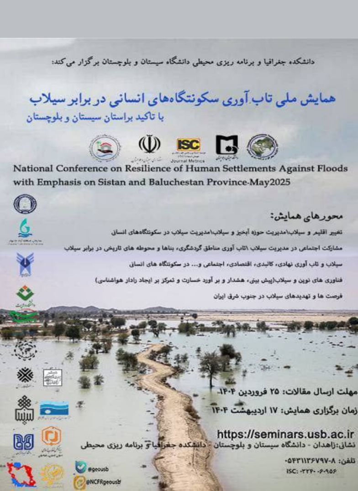

بازگشت
بازگشت

📢 فراخوان اولین همایش ملی تاب آوری سکونتگاههای انسانی در برابر سیلاب 🌊
🔍 با موضوع ویژه: تاکید بر سیستان و بلوچستان
📅 تاریخ برگزاری: [۱۱ اردیبهشت ماه سال ۱۴۰۴]
📍 مکان: [دانشگاه سیستان و بلوچستان]
🌊 محورهای همایش:
💡 بیایید با هم به دنبال راهکارهایی برای افزایش تابآوری سکونتگاههای انسانی در برابر بلایای طبیعی باشیم.
✅ با دعوت به همکاری، لطفاً این فراخوان را در گروههای خود منتشر کنید و ما را در رسیدن به اهداف این همایش یاری کنید.
🌟 همراه ما باشید تا به سوی آیندهای ایمنتر و تابآورتر حرکت کنیم! 🌟
برای اطلاعات بیشتر و ثبتنام، به آدرس سایت به نشانی https://seminars.usb.ac.ir مراجعه کنید.
🙏 با تشکر و احترام،
دانشگاه سیستان و بلوچستان، دانشکده جغرافیا و برنامهریزی محیطی
📢 اطلاعیه مهم 📢
به اطلاع کلیه پژوهشگران، دانشجویان و علاقهمندان به حوزه تابآوری سکونتگاههای انسانی در برابر سیلاب میرسانیم که گزینه ارسال مقالات برای همایش ملی "تاب آوری سکونتگاههای انسانی در برابر سیلاب با تأکید بر سیستان و بلوچستان" فعال شده است.
🗓 تاریخ برگزاری: ۱۷ اردیبهشت ۱۴۰۴
📝 مهلت ارسال مقالات: ۲۵ فروردین ۱۴۰۴
لطفاً مقالات خود را طبق فرمتهای اعلام شده به دبیرخانه همایش ارسال نمایید. برای اطلاعات بیشتر و دسترسی به راهنمای ارسال مقالات، به وبسایت همایش مراجعه فرمایید.
منتظر دریافت محصولات علمی و پژوهشی ارزشمند شما هستیم.
با تشکر،
دبیرخانه همایش ملی تابآوری سکونتگاههای انسانی در برابر سیلاب 💐🙏